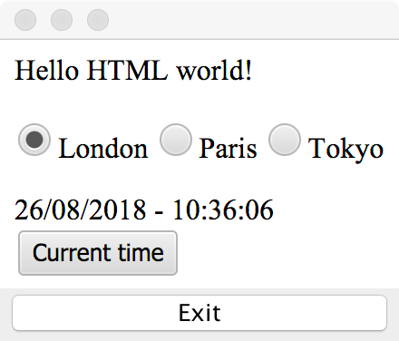

2018/08/26
In the previous article I started exploring the NetBeans Web Toolkit and I made a simple clock display.
Let's allow the user to change the city / timezone!

So first, we need to add a city property to our model:
@Model(targetId = "", className = "ClockModel", properties = {
@Property(name = "clock", type = String.class)
,
@Property(name = "city", type = String.class)
})
Then we need some radio buttons which are bound to this property:
<input type="radio" name="cityGroup" value="Europe/London" data-bind="checked: city">London
<input type="radio" name="cityGroup" value="Europe/Paris" data-bind="checked: city"/>Paris
<input type="radio" name="cityGroup" value="Asia/Tokyo" data-bind="checked: city"/>Tokyo
The radio button value will be set to the city property.
Next, we just need to take into account the current city while setting the date:
private static void updateClock(ClockModel model) {
Instant instant = Instant.now();
ZoneId zoneId = ZoneId.of(model.getCity());
ZonedDateTime zdt = ZonedDateTime.ofInstant(instant, zoneId);
model.setClock(DateTimeFormatter.ofPattern("dd/MM/yyyy - hh:mm:ss").format(zdt));
}
Next, I want to also add a button that shows the current date/time:
<button data-bind="click: $root.currentLocale">Current time</button>
This will call currentLocale on our Clock class, which has to be static:
@Function
static void currentLocale(ClockModel model) {
model.setCity(ZoneId.systemDefault().getId());
}
Note the @Function annotation and the fact that the 1st argument is our current model (there's no other way to get it otherwise).
The final version is at https://github.com/emilianbold/nbwt-clock-demo